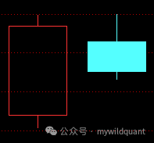
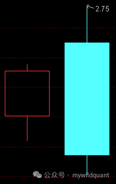
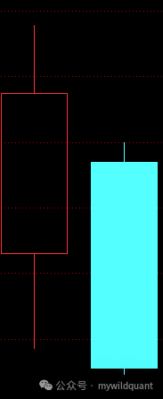
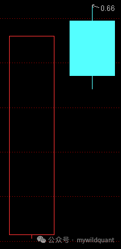
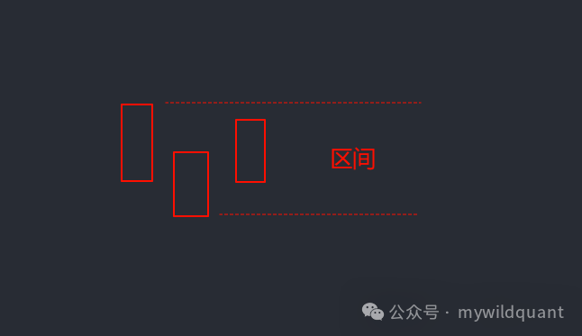
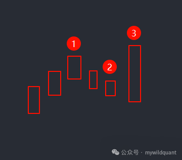
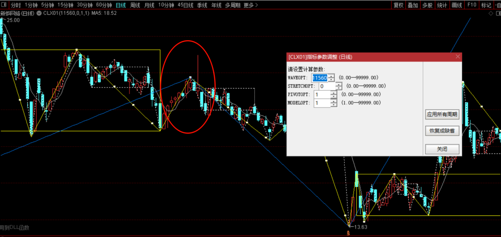
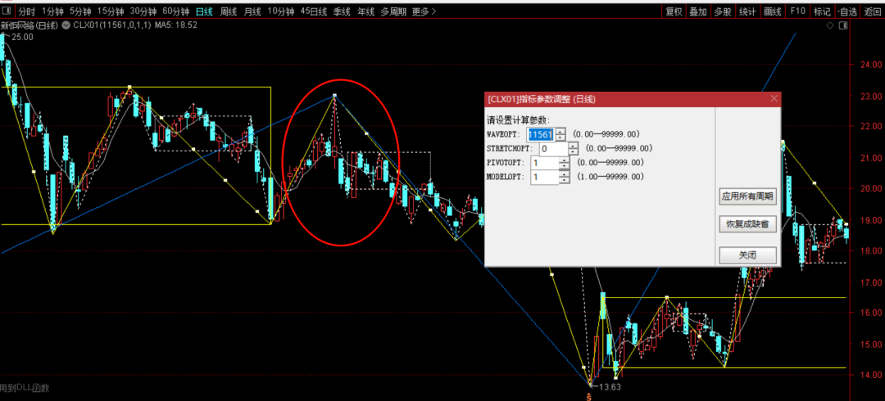
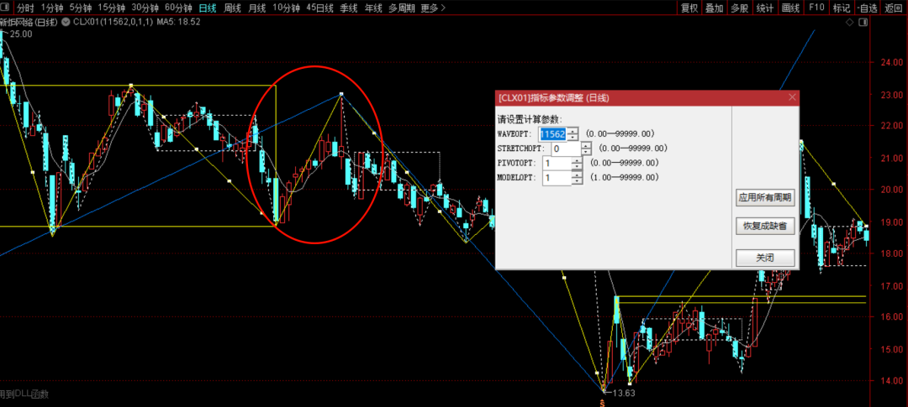

K线预处理：包含关系与分型¶
适用范围：本文描述 fqchan04 内核的划分实现。fqchan01 有独立的包含与分型文档，fqchan05（均线笔、子浪）与 fqchan06（极简分笔）的实现差异见各自插件文档。
K线预处理是缠论一切结构分析的起点：笔、线段、中枢、买卖点全部建立在「标准K线 → 分型」这两级变换之上。本章给出这套变换的完整算法定义——包含关系如何判定与合并、方向如何确定、分型如何识别，以及由 WAVEOPT 参数控制的三种算法变体。
贯穿全部算法的设计原则只有一条：不必完全复刻缠师原文，但每一种情况必须有严格定义，无遗漏、前后一致。
为什么需要预处理¶
缠论原文对顶底分型的定义：
- 顶分型：第二根K线的高点是相邻三根K线高点中最高的，且低点也是三根K线低点中最高的。
- 底分型：第二根K线的低点是相邻三根K线低点中最低的，且高点也是三根K线高点中最低的。
这个定义隐含一个前提：相邻K线之间没有包含关系。一旦出现包含（一根K线的高低区间完全覆盖另一根），“谁高谁低”失去唯一答案，分型判定随之失效。所以要先做包含关系处理，把原始K线序列变换成没有包含关系的标准K线序列（StdBar 序列），再在标准序列上识别分型。
工程上，预处理是一个确定性状态机：输入原始K线的高低点序列，输出 StdBar 序列。每根 StdBar 记录：
| 字段 | 含义 |
|---|---|
start / end |
该合并K线覆盖的原始K线起止索引 |
high / low |
合并后的高、低点 |
high_high / low_low |
覆盖区间内原始K线的最高、最低价 |
high_vertex_raw_pos / low_vertex_raw_pos |
极值所在的原始K线索引 |
direction |
方向：1 向上，-1 向下，0 未定 |
factor |
分型标记：1 顶分型，-1 底分型，0 非分型 |
factor_high / factor_low |
分型区间高、低 |
factor_strong |
是否强分型 |
后续所有上层组件（笔、段、中枢）都不再接触原始K线，只消费这个序列。预处理只需要高低点两个输入序列——收盘价仅在强分型确认时才需要（见后文），这是插件函数只接收 H/L 的原因。
包含关系处理算法¶
包含关系：前包含与后包含¶
设 \(K_n\) 为第 \(n\) 根K线，高点 \(h_n\)，低点 \(l_n\)。若 \(h_a \ge h_b\) 且 \(l_a \le l_b\)，称 \(K_a\) 包含 \(K_b\)。按“谁是容器”分两种：
- 前包含：前一根包含当前K线（\(K_{n-1}\) 包含 \(K_n\)），当前K线被吞没。
- 后包含：当前K线包含前一根（\(K_n\) 包含 \(K_{n-1}\)），当前K线是容器，甚至可能一口吞掉前面已合并的一串。


方向的判定¶
方向决定合并时取哪一侧极值。缠师的定义：
假设第 n 根K线与第 n+1 根存在包含关系，而第 n 根与第 n-1 根不是包含关系，那么若 \(g_n > g_{n-1}\)，称第 n-1、n、n+1 根K线是向上的；若 \(d_n < d_{n-1}\)，称其为向下的。（\(g\) 即高点，\(d\) 即低点）
这个定义在 \(n=0\) 时失效——没有更前面的K线可比。而程序必须从第一根K线开始处理，起始方向必须补充定义。
起始时两根K柱只有三种组合状态：
-
上升或下降形态（无包含）：方向直接决出。上升时假设前一根方向向下（当前根是新的向上K线的开始），下降时假设前一根方向向上。


-
前包含：丢弃前面的K线，从当前K线重新开始。
- 后包含：同样丢弃重来。持续包含就持续丢弃，直到出现无包含的两根K线决出方向。
起始方向的严格化定义（精确重定义）：处理 \(K_n\) 且方向未定时，查找最小的 \(x > 0\) 使 \(K_{n+x}\) 与 \(K_n\) 无包含关系，然后：
- 若 \(h_{n+x} > h_n\) 且 \(l_{n+x} > l_n\)（后续整体抬高）→ \(K_n\) 方向向下；
- 若 \(l_{n+x} < l_n\) 且 \(h_{n+x} < h_n\)（后续整体压低）→ \(K_n\) 方向向上。
判定与直觉相反：后续K线整体更高，说明当前K线处于下行末端，故方向向下。这与“上升状态假设前一根向下”一脉相承。
合并规则¶
方向确定后，包含合并按方向取值：
- 向上处理：合并K线高点 \(= \max(h_a, h_b)\)，低点 \(= \max(l_a, l_b)\)；
- 向下处理：合并K线高点 \(= \min(h_a, h_b)\)，低点 \(= \min(l_a, l_b)\)。
即顺方向保留极值：向上时保高，向下时保低。
严格分类：从方向继承到特殊K线¶
假设 \(K_0\) 到 \(K_{n-1}\) 已处理完毕，处理 \(K_n\) 时的完整分类：
前包含（\(K_{n-1}\) 包含 \(K_n\)）——方向继承：
- \(K_{n-1}\) 向上 → \(K_n\) 向上并入，做向上合并；
- \(K_{n-1}\) 向下 → \(K_n\) 向下并入，做向下合并。
后包含·单根（\(K_n\) 仅包含 \(K_{n-1}\)）——同样方向继承，按继承方向合并。
后包含·多根（\(K_n\) 包含 \(K_{n-1}\) 到 \(K_{n-x}\)，\(x > 1\)）——与未被包含的前一根合并K线 \(K_{n-x-1}\) 比较：
- 当 \(h_n > h_{n-x-1}\)（创出前合并K线的新高）：
- \(K_{n-1}\) 向上 → \(K_n\) 向上，与 \(K_{n-1}\) 做向上合并；
- \(K_{n-1}\) 向下 → \(K_n\) 方向转为向上，不做合并，作为独立K线（特殊K线，即 K型，见下文）。
- 当 \(l_n < l_{n-x-1}\)（创出新低）：
- \(K_{n-1}\) 向下 → \(K_n\) 向下，做向下合并；
- \(K_{n-1}\) 向上 → \(K_n\) 方向转为向下，作为独立K线。
至此方向判定与包含处理构成无遗漏的完全分类。这套规则即第一种修正算法（WAVEOPT 个位数 = 1）。
为什么需要修正算法？若完全按原文顺序合并（WAVEOPT 个位数 = 0），虽然处理上没有歧义，但最终图形会在分型顶点前后出现毛刺——分型顶点不是区间的最高最低点，后包含创出的新高新低被方向继承合并吞掉。修正算法就是为消除毛刺而生。
分型识别¶
顶分型与底分型¶
标准K线序列上，分型由相邻三根 StdBar 构成：bar0（左）、bar1（中，顶点）、bar2（右，确认）。
- 顶分型：bar1 的高点高于 bar0 与 bar2 的高点，低点也高于两者的低点，标记
factor = 1； - 底分型：对称，标记
factor = -1。
判定发生在 recognise_std_bars：当 bar2 形成且方向与 bar1 不同时，bar1 被标记为分型。分型顶点落在哪根原始K线上，由 high_vertex_raw_pos / low_vertex_raw_pos 记录——合并K线可能覆盖多根原始K线，极值未必在第一根。
分型的确认时刻¶
顶点K线（bar1）回答“转折在哪里”；分型真正成立，是在 bar2 出现的那一刻。确认时刻精确定义为 bar2 的第一根原始K线（std_bars[i+1].start）。
“顶点在哪里”是事后标记，“何时确认”是可操作的时机——对实盘是两种不同的信息，由此派生出分型确认信号（见用法一节）。
分型区间¶
分型区间以分型左K（bar0）的高低点定义，对应 StdBar 的 factor_high / factor_low 字段。分型中枢的划分建立在分型区间之上。

强分型¶
确认K线的收盘价直接突破左侧K线（bar0）的极值，称为强分型：
- 顶分型强确认：确认K线收盘价 < bar0 的最低价（
low_low），空头直接砸穿左侧支撑； - 底分型强确认：确认K线收盘价 > bar0 的最高价（
high_high），多头直接突破左侧压力。
用收盘价而非“中间K线是否发生过合并”来判断，是因为收盘价直接反映市场意愿，比合并次数更有交易含义。调用方不提供收盘价时，强分型判断自动退化为普通确认。
K型：后包含中的特殊K线¶
K型是第一种修正算法中“独立K线”情形的图形学名字。典型场景：

前面是向下方向的标准K线，随后一根K线后包含了它们，却创出了前一个顶分型的高点。按原文的方向继承规则，这根K线要被向下合并，高点信息就此丢失。但这个高点在次级别上可能是线段终点、走势终点，直接影响三类买卖点的构造。
K型的定义：
- K型只出现在后包含的情况下；
- 一根K线后包含前面的向下方向K线、却创出前一个顶分型的高点，不做合并，把它作为新的向上标准K线的开始；
- 对称地，后包含前面的向上方向K线、却创出前一个底分型的低点，作为新的向下标准K线的开始。
有了 K型，向上的一笔得以延伸到这根K线的最高点，高点信息被保留。
延伸一点：裸K交易中的反转形态（Pinbar、孕线、吞没线）不是缠论概念——缠论里的反转只有顶分型和底分型，没有那么多弯弯绕绕。但作为微观确认手段，可以在分型位置叠加这类K线形态做预警，两套语言并不冲突。
WAVEOPT 参数与算法变体¶
个位数控制包含处理模式¶
WAVEOPT 是缠论插件的核心控制参数，其个位数选择包含处理算法：
| 个位数 | 算法 | 效果 |
|---|---|---|
| 0 | 原文算法，顺序合并不做修饰 | 可能出现分型毛刺，丢失后包含创新高/新低的极值 |
| 1 | 第一种修正算法（保留 K型） | 保留分型波动 |
| 2 | 第二种修正算法（反向重合并） | 不保留分型波动 |
例如 WAVEOPT 取 11550、11551、11552：仅个位数不同，其余数位控制的笔等参数完全一致。三种模式在同一走势上的对比：



第二种修正算法¶
与第一种基本一致，唯一区别在后包含·多根且方向冲突的情形（\(K_{n-1}\) 方向与 \(K_n\) 的突破方向相反）：
- 当 \(h_n > h_{n-x-1}\) 且 \(K_{n-1}\) 向下：\(K_n\) 方向向上，把 \(K_n\) 到 \(K_{n-x}\) 整体做向下合并为一根K线，并取消原先 \(K_{n-x}\) 到 \(K_{n-1}\) 的合并结果；
- 当 \(l_n < l_{n-x-1}\) 且 \(K_{n-1}\) 向上：\(K_n\) 方向向下，把 \(K_n\) 到 \(K_{n-x}\) 整体做向上合并，取消原先的合并结果。
直观效果：第一种修正让 K型独立成线，图上多保留一个分型波动，信息更全；第二种修正把整段折叠成一根合并K线，波动被吸收，序列更平滑。按需选择即可。
fqchan06：没有包含处理的变体¶
另一条路线是干脆取消包含处理。fqchan06 的实验算法遵循几条简单原则：
- 不做K线包含处理，不做顶底分型处理，以 5 日高点、5 日低点取代；
- 一笔的顶底之间最少 5 根K线；
- 不允许所有K线完全重叠；
- 允许次高、次低成笔。
架构上的差异：fqchan04 是 StdBar 架构（原始K线 → 合并 → 分型 → 成笔判断）；fqchan06 跳过 StdBar 中间层，直接在原始K线上增量扫描极值点，复杂度从 \(O(N^2)\) 降到 \(O(N)\)。代价是分型信息不在主流程中产生——需要分型确认信号时，得在笔端点算完后额外跑一次分型检测，在输出端补齐信号，而不改动核心算法。
常见误区与算法演进¶
这套算法不是一次成型的。多轮修正收敛为上文所述的“当前正确做法”：
| 议题 | 曾经的做法/缺陷 | 当前正确做法 |
|---|---|---|
| 起始方向 | 假设 + 丢弃包含段，早期实现有隐藏缺陷 | 最小 \(x > 0\) 无包含查找 + 方向判定的严格定义 |
| 起始分型 | 早期分型处理有错，多次返工修正 | 以严格定义为准，起始段同样无歧义 |
| 后包含创新高新低 | 方向继承合并，极值丢失、出现毛刺 | K型独立成线（第一种修正）或反向重合并（第二种修正） |
| 分型区间 | 误用分型中间K线定义 | 用分型左K定义 |
| 分型中枢 | 漏画应画出的分型中枢 | 分型中枢在笔内划分 |
| 确认信号 | 实验版插件缺确认信号 | 不改核心算法，输出端补齐，信号语义跨版本一致 |
三个容易踩的坑：
- 把预处理精确性当成唯一正确答案。包含处理划分的是后验的、概率性的结构，不同模式对同一走势给出不同但各自自洽的结果——追求精确的目的是规则一致、可复现，不是寻找唯一真理。
- 漏掉方向继承的完整范围。前包含、后包含单根都必须继承方向；只有多根包含且突破前合并K线极值时，才允许方向反转。
- 混淆顶点时刻与确认时刻。信号打在 bar1 还是 bar2 的第一根原始K线，是两个不同的时间点；回测里用错了就是未来函数。
用法¶
通达信公式端¶
fqchan01（严格定义算法的实现）：绑定 1 号函数，WAVEOPT 用 11550 / 11551 / 11552 切换三种包含处理模式，发布包内附待导入公式。
fqchan04：1 号函数输出分型端点信号：
SW:=TDXDLL4(1,H,L,0);
SW 由 -1、1、0 组成：1 分型高点，-1 分型低点，0 无分型。
fqchan06：FQBI06(HIGH, LOW, CLOSE)，第 3 个参数传 CLOSE 即可获得分型确认信号。
分型/笔端点的确认信号值（fqchan04 与 fqchan06 语义一致）：
| 信号值 | 含义 | 位置 |
|---|---|---|
1 / -1 |
笔顶 / 笔底 | 分型最高/最低K线 |
0.5 / -0.5 |
中间态（可能被推翻） | 同上 |
11 / -11 |
顶/底分型确认 | 确认K线（bar2 第一根原始K线） |
12 / -12 |
顶/底分型强确认 | 同上（收盘价突破 bar0 极值时） |
-3 |
序列标识 | 首个非零位 |
筛选确认信号用 abs(x) >= 10，区分强弱用 abs(x) == 12。
大智慧 / 金字塔 / 交易师端¶
函数与通达信对标：sw:="fqchan04@SW"; 对标 1 号函数，输出分型顶点；bi:="fqchan04@BI"(WAVEOPT); 输出笔顶点。分型中枢以 sw 为入参，用 ZSZGVAR / ZSZDVAR / ZSSEVAR 系列取中枢高、低与起止。
Python 端¶
fqchan04-python / fqchan06-python 包提供同名函数：
import fqchan04
bars = fqchan04.fq_recognise_bars(length, high, low) # 原始K柱列表
std_bars = fqchan04.fq_recognise_std_bars(length, high, low) # 标准K线列表
swing = fqchan04.fq_recognise_swing(length, high, low) # 分型信号 1/-1/0
bi = fqchan04.fq_recognise_bi(length, high, low, c, options) # 笔信号，c 可选
fq_recognise_std_bars返回 StdBar 列表，字段即上文表格所列，可直接遍历factor、factor_high、factor_strong做分型分析；fq_recognise_bi的收盘价参数（部分绑定中名为c）可选：传空列表则不做强分型判断，确认信号统一为11/-11；传入收盘价序列则激活12/-12强确认；- 筛选确认信号：
confirm_sigs = [x for x in bi if abs(x) >= 10]。
知识来源¶
- 番茄缠论插件是怎么处理K线的包含关系、分型及K型的，详细说明（2024-07-18）
- 番茄缠论插件更新，包含和分型处理优化和纠正了些许错误（2024-07-20）
- 番茄缠论插件更新来袭，继续修正起始分型处理（2024-07-29）
- 番茄缠论插件(fqchan04)更新，修正分型区间错误（2024-08-11）
- 发布fqchan04-2024.12.27，优化分型中枢的划分（2024-12-27）
- 番茄缠论插件函数说明（二）（2025-06-15）
- K线包含处理的精确重定义（2025-06-25）
- 发布fqchan01，实现新的严格定义的K线包含和分型处理（2025-07-06）
- fqchan06 release（2023-04-05）
- 野生量化日志：今天更新fqchan06版本的缠论插件（2025-12-12）
- FqChan04缠论插件：听见笔的回声，缠论分型确认信号的设计与实现（2026-05-24）
- FqChan06缠论插件：从04到06，分型确认信号的跨插件实现（2026-05-27）
- 有哪些常用的K线的反转形态（2024-10-31）
- 从“缠论精确性”到“交易系统性”的认知跃迁（2026-05-09）